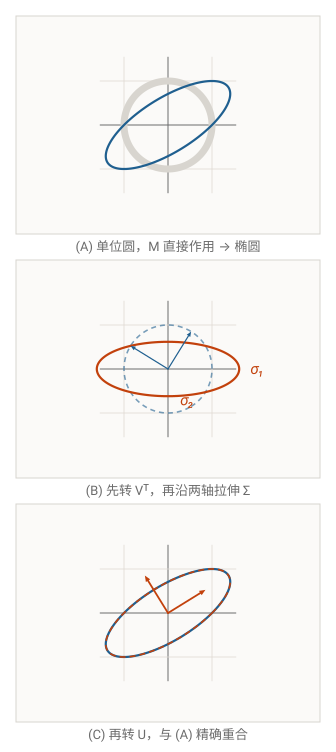
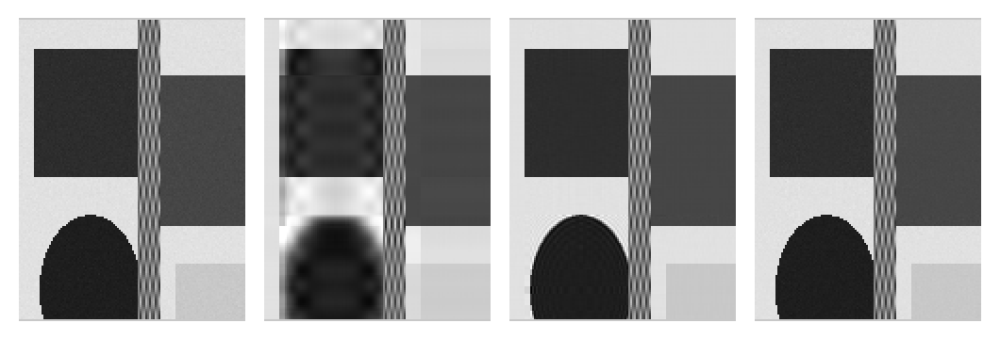
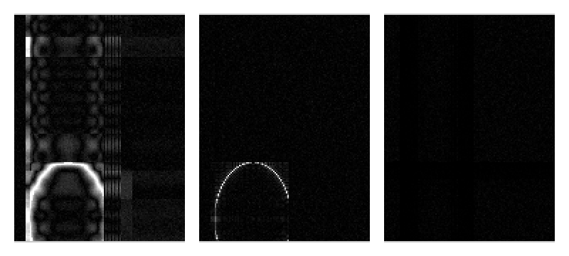
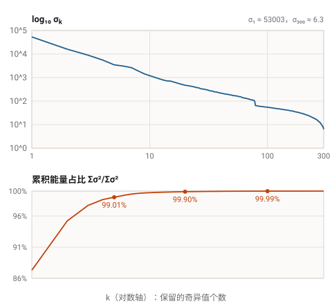

15. 奇异值分解：几何直觉、手算过程与低秩近似
15.1 为什么这一章在这里
前面 14 节覆盖的都是推理服务里逐行出现的公式：softmax、RMSNorm、注意力、浮点误差。奇异值分解（singular value decomposition，SVD）不属于「每个 token 都要算一遍」的那类公式，但它解释了后面会反复借用的一件事：一个矩阵的「有效维度」可以比它的形状小得多。
具体一点：
- 低秩适配（LoRA）：微调时不让 \(W\in\mathbb{R}^{m\times n}\) 自由变化，而是只学一个秩为 \(r\)（比如 8 或 16）的增量 \(\Delta W=BA\)，\(B\in\mathbb{R}^{m\times r}\)、\(A\in\mathbb{R}^{r\times n}\)。整个技巧成立的前提是「真实的任务增量近似低秩」。
- KV cache 的压缩与写入成本：讨论 cache 能不能压、压多少时，通常先用 SVD 看 KV 矩阵的奇异值衰减速度，衰减快才谈得上截断。
- 量化与误差：谱范数 \(\sigma_1\) 是「矩阵最多能把向量拉长多少倍」，它是把逐元素误差换算成输出误差时最常用的那把尺子。
所以这一章不追代码行号，而是把 SVD 本身讲透：先建立几何图像，再从图像推出定义，然后手算一个 \(3\times2\) 的例子，最后用代码验证「截断」到底丢了多少东西。
15.2 矩阵是线性变换：列就是基向量的像
线性代数课上通常把 \(A\mathbf{x}=\mathbf{b}\) 讲成一堆线性方程。另一种看法更有用：\(A\) 是一个函数，把 \(\mathbb{R}^n\) 里的向量搬到 \(\mathbb{R}^m\) 里。
\[ f(\mathbf{x})=A\mathbf{x},\qquad A\in\mathbb{R}^{m\times n},\ \mathbf{x}\in\mathbb{R}^{n}. \]为什么矩阵乘法长这个样子？把 \(\mathbf{x}\) 用标准基 \(\mathbf{e}_1,\dots,\mathbf{e}_n\) 展开，再用 \(f\) 的线性性（可加、齐次）拆开：
\[ \begin{aligned} \mathbf{x}&=\sum_{j=1}^{n}x_j\mathbf{e}_j,\\ f(\mathbf{x})&=f\Big(\sum_j x_j\mathbf{e}_j\Big)=\sum_j x_j f(\mathbf{e}_j)=\sum_j x_j\,\mathbf{a}_j, \end{aligned} \]其中 \(\mathbf{a}_j=f(\mathbf{e}_j)\) 就是 \(A\) 的第 \(j\) 列。也就是说：
矩阵的第 \(j\) 列 = 第 \(j\) 个标准基向量被搬到的地方；而 \(A\mathbf{x}\) 就是「以 \(\mathbf{x}\) 的分量为系数，对各列做线性组合」。
举个 \(2\times2\) 的例子，\(A=\begin{bmatrix}2&-1\\0&1\end{bmatrix}\)，\(\mathbf{x}=\begin{bmatrix}1\\2\end{bmatrix}\)：
\[ \begin{bmatrix}2&-1\\0&1\end{bmatrix}\begin{bmatrix}1\\2\end{bmatrix} =1\cdot\begin{bmatrix}2\\0\end{bmatrix}+2\cdot\begin{bmatrix}-1\\1\end{bmatrix} =\begin{bmatrix}0\\2\end{bmatrix}. \]看列就能直接读出这个变换干了什么：\(\mathbf{e}_1\) 被拉长 2 倍仍指向右，\(\mathbf{e}_2\) 被搬到左上。整个平面被「剪切 + 翻转」了一下，单位正方形变成平行四边形。行列式是 2，正好等于面积的放大倍数。
能做的操作只有那几种：旋转、翻转、拉伸/压缩、剪切、投影（把维度压掉）。不能做的是「弯折」：线性变换必须把直线映成直线，把等距的点映成等距的点。
15.3 正交矩阵：只转不拉
SVD 的几何内容可以一句话说完：任何线性变换都可以拆成「转一下、沿正交方向拉伸、再转一下」。先把「只转不拉」这一类说清楚，后面就顺了。
方阵 \(Q\) 是正交矩阵，当且仅当它的列两两正交且都是单位向量，即 \(Q^\top Q=I\)（实矩阵情形），等价地 \(Q^{-1}=Q^\top\)。它有三个好性质，都是一行推导：
- 角度不变：\((Q\mathbf{u})^\top(Q\mathbf{v})=\mathbf{u}^\top Q^\top Q\mathbf{v}=\mathbf{u}^\top\mathbf{v}\)。
- 长度不变：\(\lVert Q\mathbf{v}\rVert_2^2=\mathbf{v}^\top Q^\top Q\mathbf{v}=\lVert\mathbf{v}\rVert_2^2\)。
- 面积（体积）绝对值不变：\(1=\det(I)=\det(Q^\top Q)=(\det Q)^2\)，故 \(\det Q=\pm1\)。符号是 \(+1\) 表示纯旋转，\(-1\) 表示带一次翻转（手性改变）。
所以正交矩阵就是「刚体运动」在原点处的版本：旋转或镜像，不改变任何长度、夹角、面积。二维里它长这样：
\[ \begin{aligned} \text{旋转：}\quad Q&=\begin{bmatrix}\cos\theta&-\sin\theta\\ \sin\theta&\cos\theta\end{bmatrix},\\[2pt] \text{镜像：}\quad Q&=\begin{bmatrix}\cos\theta&\sin\theta\\ \sin\theta&-\cos\theta\end{bmatrix}. \end{aligned} \]「正交」在这里指列向量互相垂直、每列长度为 1，不是「矩阵元素正交」。名字起得不好，只能记牢。
15.4 几何核心：先转、再拉、再转
现在做那个关键实验。拿一个单位圆（二维时比较好画；一般 \(n\) 维是单位球），随便乘一个矩阵 \(M\)。结果是什么形状？
答案是椭圆（\(n\) 维时是超椭球）。原因是椭圆的定义就是「到两个定点的距离之和为常数」……这个定义在这里不好用，换个等价说法：存在一组正交方向，使得在这组方向上，球被拉伸的倍数恰好是常数。这正是下面要构造的。
先给结论，再推：
先旋转输入空间，再沿坐标轴拉伸/压缩（或翻转），再旋转输出空间。任何矩阵都只做这三件事——它不会「剪切」，只要你允许它在输入和输出两端各转一次。
有些讲义会把「交换单位阵的两列」当成旋转的例子，这是错的，两层都错：
① 交换 \(\begin{bmatrix}1&0\\0&1\end{bmatrix}\) 的两列得到 \(\begin{bmatrix}0&1\\1&0\end{bmatrix}\)，它把 \((x,y)\) 映成 \((y,x)\)，是关于 \(y=x\) 的镜像，\(\det=-1\)；
② 对角矩阵 \(\operatorname{diag}(\alpha_1,\alpha_2)\) 只沿两个标准基方向各自缩放，不能把两个轴「混」起来，所以它做不到 90° 旋转（\(90^\circ\) 的矩阵是 \(\begin{bmatrix}0&-1\\1&0\end{bmatrix}\)，非对角元非零，\(\det=+1\)）。对角矩阵唯一能实现的旋转是 \(\operatorname{diag}(-1,-1)\)，即 180°。
判断口径：先看 \(\det\) 的符号（\(-1\) 一定含镜像），再看标准基方向是否被打乱。
用剪切矩阵亲手验证一下。取
\[ M=\begin{bmatrix}1&1\\0&1\end{bmatrix}, \]它把单位正方形剪成平行四边形，看起来完全不像「拉伸」。但它的 SVD 是
\[ \begin{aligned} M&=U\Sigma V^\top,\\ \sigma_1&=\varphi\approx1.618,\qquad \sigma_2=\tfrac{1}{\varphi}\approx0.618 . \end{aligned} \]
其中 \(\varphi\) 是黄金比。换算成角度：\(V\) 是 \(-58.28^\circ\) 的旋转，\(U\) 是 \(+31.72^\circ\) 的旋转。于是「剪切」= 先把输入平面逆时针转回去 \(58.28^\circ\)（进入一个特殊朝向，在这个朝向下剪切恰好表现为沿两轴的拉伸），沿两轴分别拉 \(1.618\) 和 \(0.618\) 倍，再把结果转 \(31.72^\circ\)。
顺便验算两个恒等式：
\[ \begin{aligned} |\det M|&=\sigma_1\sigma_2=\varphi\cdot\tfrac{1}{\varphi}=1,\\ \kappa(M)&=\frac{\sigma_1}{\sigma_2}=\varphi^2\approx2.618 . \end{aligned} \]行列式 1 说明面积没变（剪切确实不改面积），\(\kappa\) 叫条件数，说这个方向上「拉长」和「压短」差了 2.618 倍——它衡量这个线性变换有多「扁」，后面 15.11 会用。
圆的像在椭圆上的对应关系很直观：半径方向被拉得最多的那条，倍数正好是 \(\sigma_1\)；在非零奇异值的范围内，拉得最少的那条，倍数由 \(\sigma_p\) 给出，其中 \(p=\min(m,n)\)。如果某个 \(\sigma_i=0\)，说明这个方向被压成了 0——球在这个维度上被拍扁了，矩阵不满秩。
15.5 从图像推出公式
上面的几何描述，可以原封不动地写成代数。设输入空间 \(\mathbb{R}^n\) 有一组正交单位基 \(\mathbf{v}_1,\dots,\mathbf{v}_n\)（就是「转回去」之后的那组坐标轴）。因为它们是正交单位基，任何向量都能这样展开（就是在做投影）：
\[ \mathbf{x}=\sum_{j=1}^{n}(\mathbf{x}\cdot\mathbf{v}_j)\,\mathbf{v}_j . \]两边左乘 \(M\)，用线性性把系数提到外面：
\[ M\mathbf{x}=\sum_{j=1}^{n}(\mathbf{x}\cdot\mathbf{v}_j)\,M\mathbf{v}_j . \]几何上，我们要求输入方向 \(\mathbf{v}_j\) 经过 \(M\) 后只产生一个确定的输出方向，长度缩放为 \(\sigma_j\) 倍。由于输出空间可能是 \(\mathbb{R}^m\)，输出方向和输入方向不在同一个空间，所以给它另起个名字 \(\mathbf{u}_j\)（单位向量）：
\[ M\mathbf{v}_j=\sigma_j\mathbf{u}_j . \]代回去，再把标量 \((\mathbf{x}\cdot\mathbf{v}_j)\) 换成 \(\mathbf{v}_j^\top\mathbf{x}\)，挪到后面：
\[ M\mathbf{x}=\sum_{j=1}^{n}\sigma_j\,\mathbf{u}_j\,(\mathbf{v}_j^\top\mathbf{x}) =\Big(\sum_{j=1}^{n}\sigma_j\mathbf{u}_j\mathbf{v}_j^\top\Big)\mathbf{x}. \]这个式子对任意 \(\mathbf{x}\) 都成立，所以括号里的矩阵就是 \(M\) 本身：
\[ \boxed{M=\sum_{j=1}^{p}\sigma_j\,\mathbf{u}_j\mathbf{v}_j^\top=U\Sigma V^\top} \]其中 \(U=[\mathbf{u}_1\ \cdots\ \mathbf{u}_m]\)、\(V=[\mathbf{v}_1\ \cdots\ \mathbf{v}_n]\) 是正交矩阵，\(p=\min(m,n)\)，\(\Sigma\) 是把 \(\sigma_1\ge\cdots\ge\sigma_p\ge0\) 摆在左上角、其余补零的 \(m\times n\) 矩阵。
每一项 \(\sigma_j\mathbf{u}_j\mathbf{v}_j^\top\) 是一个秩 1 矩阵：把输入往 \(\mathbf{v}_j\) 方向投影、乘 \(\sigma_j\)、再送到 \(\mathbf{u}_j\) 方向。所以 SVD 的意思也可以说成：
任何矩阵都是若干个「秩 1 切片」的加权和，权重就是奇异值。这也是为什么「丢掉最小的那些切片」等于「低秩近似」。
15.6 尺寸、术语与秩
约定 \(A\in\mathbb{R}^{m\times n}\)，\(p=\min(m,n)\)。三种矩阵的尺寸容易记错，列一下：
| 符号 | 尺寸 | 内容 |
|---|---|---|
| \(U\) | \(m\times m\) | 左奇异向量（left singular vectors）作为列，正交 |
| \(\Sigma\) | \(m\times n\) | 对角线上是 \(\sigma_1\ge\cdots\ge\sigma_p\ge0\)，其余位置为 0 |
| \(V\) | \(n\times n\) | 右奇异向量（right singular vectors）作为列，正交 |
几个立刻能读出来的性质：
- 秩：非零奇异值的个数 \(r=\#\{j:\sigma_j>0\}\) 等于 \(\operatorname{rank}A\)。
- 零空间：\(\mathbf{v}_{r+1},\dots,\mathbf{v}_n\) 张成 \(A\) 的零空间（\(n-r\) 维）；\(\mathbf{u}_{r+1},\dots,\mathbf{u}_m\) 张成左零空间（\(m-r\) 维）。后者包含矩形矩阵因补齐尺寸而增加的左奇异向量，并不都对应 \(\Sigma\) 对角线上的一个独立奇异值。
- 值域：\(\{\mathbf{u}_1,\dots,\mathbf{u}_r\}\) 是列空间的一组正交基。
- Frobenius 范数：\(\lVert A\rVert_F^2=\sum_{i,j}A_{ij}^2=\sum_j\sigma_j^2\)。所有「能量」都记在奇异值上。
- 谱范数：\(\lVert A\rVert_2=\sigma_1=\max_{\mathbf{x}\ne0}\lVert A\mathbf{x}\rVert_2/\lVert\mathbf{x}\rVert_2\)，即最大拉伸倍数。
- 行列式（方阵）：\(|\det A|=\prod_j\sigma_j\)，即各方向拉伸倍数的乘积。
- 唯一性：\(\sigma_j\) 唯一；当 \(\sigma_j\) 互不相同时，\(\mathbf{u}_j,\mathbf{v}_j\) 只能差一个符号（可以同时乘 \(-1\)，乘积不变）。所以任何实现返回的 \(U,V\) 都可能和手算差几个负号。
特征分解 \(A=Q\Lambda Q^{-1}\) 只对方阵、且要有足够多线性无关特征向量时才存在；\(A\) 不是实对称时特征向量还未必正交。SVD 对任意实矩阵都存在，\(\mathbf{u}\) 与 \(\mathbf{v}\) 各自正交，\(\sigma\) 也一定是非负实数。所以工程上能用的永远是 SVD，而不是特征分解。
四个基本子空间，一套正交基。线性代数的四个子空间和 SVD 是一一对应的，看懂这张表就不用再背维数公式：
| 子空间 | 所在空间 | 维数 | SVD 给的正交基 |
|---|---|---|---|
| 列空间（值域） | \(\mathbb{R}^m\) | \(r\) | \(\mathbf{u}_1,\dots,\mathbf{u}_r\) |
| 左零空间（\(A^\top\) 的零空间） | \(\mathbb{R}^m\) | \(m-r\) | \(\mathbf{u}_{r+1},\dots,\mathbf{u}_m\) |
| 行空间 | \(\mathbb{R}^n\) | \(r\) | \(\mathbf{v}_1,\dots,\mathbf{v}_r\) |
| 零空间 | \(\mathbb{R}^n\) | \(n-r\) | \(\mathbf{v}_{r+1},\dots,\mathbf{v}_n\) |
所以 \(\mathbb{R}^n=\) 行空间 \(\oplus\) 零空间、\(\mathbb{R}^m=\) 列空间 \(\oplus\) 左零空间，两组基都是标准正交的。这也顺手解释了秩–零化度定理：\(r+(n-r)=n\)。前面 15.13 里「零空间的基向量直接读出来」，就是用了这张表的第四行。
15.7 怎么算：从 \(A^\top A\) 出发
SVD 和特征分解的关系只有两行。把 \(A=U\Sigma V^\top\) 代进 \(A^\top A\)：
\[ \begin{aligned} A^\top A&=(U\Sigma V^\top)^\top(U\Sigma V^\top)\\ &=V\Sigma^\top U^\top U\Sigma V^\top =V(\Sigma^\top\Sigma)V^\top . \end{aligned} \]\(\Sigma^\top\Sigma\) 是 \(n\times n\) 的对角矩阵，对角元是 \(\sigma_j^2\)（多出来的补零）。右乘 \(V\) 的第 \(j\) 列 \(\mathbf{v}_j\)，得到
\[ A^\top A\,\mathbf{v}_j=\sigma_j^2\,\mathbf{v}_j . \]同理
\[ AA^\top=U(\Sigma\Sigma^\top)U^\top\quad\Longrightarrow\quad AA^\top\mathbf{u}_j=\sigma_j^2\mathbf{u}_j . \]\(\mathbf{v}_j\) 是 \(A^\top A\) 的单位特征向量，\(\mathbf{u}_j\) 是 \(AA^\top\) 的单位特征向量，\(\sigma_j=\sqrt{\lambda_j}\)。\(A^\top A\) 与 \(AA^\top\) 都是对称半正定矩阵，特征值非负，所以开方总是合法的。
因此手算流程是：
- 算 \(A^\top A\)（\(n\times n\)）与 \(AA^\top\)（\(m\times m\)），挑小的那个用；两步都用也行，正好交叉验证。
- 解特征方程 \(\det(A^\top A-\lambda I)=0\) 得 \(\lambda_1\ge\cdots\ge\lambda_n\ge0\)，开方得 \(\sigma_j\)。
- 对每个 \(\lambda_j\) 解 \((A^\top A-\lambda_j I)\mathbf{v}=0\)，单位化得 \(\mathbf{v}_j\)，排成 \(V\)。
- 用 \(\mathbf{u}_j=A\mathbf{v}_j/\sigma_j\) 反算左奇异向量（只对 \(\sigma_j>0\) 有效）。
- 剩下的 \(\mathbf{u}\) 用「与已有 \(\mathbf{u}\) 正交」补齐（或直接解 \(A^\top\mathbf{x}=0\) 再 Gram–Schmidt）。
手算用 \(A^\top A\) 很舒服，但浮点数下它会把条件数平方：\(\kappa(A^\top A)=\kappa(A)^2\)。\(\sigma_1/\sigma_n=10^8\) 时，\(\lambda\) 的动态范围是 \(10^{16}\)，双精度直接丢掉小的一半。所以 LAPACK / NumPy 走的是双对角化 + QR 迭代（Golub–Kahan），不是显式构造 \(A^\top A\)。这也是为什么截断 SVD 要用库函数，而不是自己写 \(A^\top A\) 加 eig。
15.8 手算一个 \(3\times2\) 的例子
取 \(A=\begin{bmatrix}1&0\\0&1\\2&2\end{bmatrix}\)，\(m=3,n=2\)，所以 \(U\) 是 \(3\times3\)、\(\Sigma\) 是 \(3\times2\)、\(V\) 是 \(2\times2\)。
第一步：\(n=2\lt m=3\)，用小的那个：
\[ A^\top A=\begin{bmatrix}1&0&2\\0&1&2\end{bmatrix}\begin{bmatrix}1&0\\0&1\\2&2\end{bmatrix} =\begin{bmatrix}5&4\\4&5\end{bmatrix}. \]第二步：特征多项式
\[ \begin{aligned} \det\begin{bmatrix}5-\lambda&4\\4&5-\lambda\end{bmatrix} &=(5-\lambda)^2-16\\ &=\lambda^2-10\lambda+9, \end{aligned} \]两根 \(\lambda_1=9,\lambda_2=1\)，于是 \(\sigma_1=3,\sigma_2=1\)，\(\Sigma=\begin{bmatrix}3&0\\0&1\\0&0\end{bmatrix}\)。
第三步：对 \(\lambda_1=9\)，\((A^\top A-9I)\mathbf{v}=0\) 给出 \(-4v_1+4v_2=0\)，即 \(v_1=v_2\)，单位化得 \(\mathbf{v}_1=\frac{1}{\sqrt2}\begin{bmatrix}1\\1\end{bmatrix}\)。对 \(\lambda_2=1\)，得 \(-v_1=v_2\)，故 \(\mathbf{v}_2=\frac{1}{\sqrt2}\begin{bmatrix}1\\-1\end{bmatrix}\)。
\[ V=\frac{1}{\sqrt2}\begin{bmatrix}1&1\\1&-1\end{bmatrix},\qquad V^\top V=I . \]第四步：用 \(\mathbf{u}_j=A\mathbf{v}_j/\sigma_j\) 反算前两列：
\[ \begin{aligned} \mathbf{u}_1&=\frac{1}{3}\cdot\frac{1}{\sqrt2}\begin{bmatrix}1\\1\\4\end{bmatrix} =\frac{1}{\sqrt{18}}\begin{bmatrix}1\\1\\4\end{bmatrix},\\ \mathbf{u}_2&=\frac{1}{1}\cdot\frac{1}{\sqrt2}\begin{bmatrix}1\\-1\\0\end{bmatrix}. \end{aligned} \]第五步：还差 \(\mathbf{u}_3\)，要求单位长度且同时垂直于 \(\mathbf{u}_1,\mathbf{u}_2\)。注意 \(\mathbf{u}_3\perp\mathbf{u}_2\)（分量 \((1,-1,0)/\sqrt2\)）相当于前两个分量相等，设 \(\mathbf{u}_3=(a,a,c)\)；再由 \(\mathbf{u}_3^\top\mathbf{u}_1=0\) 得 \(2a+4c=0\)，即 \(a=-2c\)。取 \(c=\frac13\) 归一化得
\[ \mathbf{u}_3=\frac{1}{3}\begin{bmatrix}-2\\-2\\1\end{bmatrix}. \] \[ \mathbf{u}_3\cdot\mathbf{u}_1=\frac{-2-2+4}{3\sqrt{18}}=0 . \]于是
\[ \begin{aligned} U&=\begin{bmatrix} \frac{1}{\sqrt{18}}&\frac{1}{\sqrt2}&-\frac23\\[2pt] \frac{1}{\sqrt{18}}&-\frac{1}{\sqrt2}&-\frac23\\[2pt] \frac{4}{\sqrt{18}}&0&\frac13 \end{bmatrix}. \end{aligned} \] \[ \Sigma=\begin{bmatrix}3&0\\0&1\\0&0\end{bmatrix}, \qquad V^\top=\frac{1}{\sqrt2}\begin{bmatrix}1&1\\1&-1\end{bmatrix}. \] \[ A=U\Sigma V^\top . \]验算：\(\lVert A\rVert_F^2=1+0+0+1+4+4=10\)，而 \(\sigma_1^2+\sigma_2^2=9+1=10\)，一致。
秩 1 近似：只保留最大的切片 \(\sigma_1\mathbf{u}_1\mathbf{v}_1^\top\)：
\[ \begin{aligned} A_1&=\sigma_1\mathbf{u}_1\mathbf{v}_1^\top\\ &=3\cdot\frac{1}{\sqrt{18}}\begin{bmatrix}1\\1\\4\end{bmatrix} \cdot\frac{1}{\sqrt2}\begin{bmatrix}1&1\end{bmatrix}\\ &=\begin{bmatrix}0.5&0.5\\0.5&0.5\\2&2\end{bmatrix}. \end{aligned} \]对比原矩阵 \(A\)，误差
\[ \begin{aligned} \lVert A-A_1\rVert_F&=\sigma_2=1,\\ \frac{\lVert A-A_1\rVert_F}{\lVert A\rVert_F}&=\frac{1}{\sqrt{10}}\approx31.6\%, \end{aligned} \]而「能量」保住了 \(\sigma_1^2/\sum_j\sigma_j^2=9/10=90\%\)。逐元素 MSE 是 \(1/6\approx0.1667\)。
用 NumPy 算同一个矩阵会得到符号翻转的版本（第一列整体取负）。不是算错：同时把 \(\mathbf{u}_j,\mathbf{v}_j\) 乘 \(-1\)，\(\mathbf{u}_j\mathbf{v}_j^\top\) 不变，SVD 依然成立。
15.9 三种形态：full、compact、truncated
同一个分解，工程上有三种切法。设 \(r=\operatorname{rank}A\le p=\min(m,n)\)。
- full SVD：保留全部 \(m\) 个 \(\mathbf{u}\)、全部 \(n\) 个 \(\mathbf{v}\)。尺寸 \(m\times m\)、\(m\times n\)、\(n\times n\)。用于理论推导、零空间、伪逆。
- compact（经济型）：只保留前 \(r\) 个（\(\sigma_j>0\)）。尺寸 \(m\times r\)、\(r\times r\)、\(r\times n\)。精确重构，省掉补零部分。
- truncated（截断）：只保留前 \(k\le r\) 个（最大的一批）。尺寸 \(m\times k\)、\(k\times k\)、\(k\times n\)。用于低秩近似、压缩、降维。
NumPy 的 svd 默认 full_matrices=True，返回 full 形式：\(U\) 是 \(m\times m\)、\(V^\top\) 是 \(n\times n\)，多出来的列不参与重构（它们补足左右零空间的正交基）。设 full_matrices=False 得到的是 reduced/economy 形式：\(U\) 是 \(m\times p\)、\(V^\top\) 是 \(p\times n\)，\(p=\min(m,n)\)。它不会根据数值秩自动删掉接近 0 的奇异值；若要得到前面定义的 compact 形式，还需按秩阈值保留对应部分。要做截断近似则自己切前 \(k\) 列。注意 \(V^\top\) 是转置后的，行才是右奇异向量，这一点最容易写错。
为什么「砍掉小的」是合理的？下面这个定理是全部低秩近似的依据。
设 \(A_k=\sum_{j\le k}\sigma_j\mathbf{u}_j\mathbf{v}_j^\top\)，则对所有秩不超过 \(k\) 的矩阵 \(B\)：
\[ \begin{aligned} \lVert A-A_k\rVert_F&=\sqrt{\textstyle\sum_{j>k}\sigma_j^2} \le\lVert A-B\rVert_F,\\ \lVert A-A_k\rVert_2&=\sigma_{k+1}\le\lVert A-B\rVert_2 . \end{aligned} \]也就是说 \(A_k\) 在 Frobenius 范数和谱范数下同时是最优秩 \(k\) 近似。误差只看「被丢掉的那些奇异值」，没有任何玄学。
推论：相对误差的平方 = 被丢掉的能量占比，即
\[ \frac{\lVert A-A_k\rVert_F^2}{\lVert A\rVert_F^2} =\frac{\sum_{j>k}\sigma_j^2}{\sum_{j\le r}\sigma_j^2}. \]实际做决策时，只要画一条「累计能量 \(\sum_{j\le k}\sigma_j^2/\sum_j\sigma_j^2\) 关于 \(k\) 的曲线」，看它在哪儿拐平就够了。
15.10 数值实验：奇异值衰减有多快
下面用一个 400×300 的合成灰度图做实验：四个硬边色块（高对比、位置规则）+ 一条细竖条纹带（高频）+ 标准差 2 的轻噪声。取「硬边」而不是平滑渐变，是因为真实的权重矩阵、注意力图也是这种「大块结构 + 少量高频」的形态；平滑渐变会让 SVD 显得比实际更强。完整代码在 15.11。


| k | 存储 | 能量 | 相对误差 | RMSE |
|---|---|---|---|---|
| 5 | 2.92% | 99.0149% | 0.0993 | 16.25 |
| 10 | 5.84% | 99.7425% | 0.0507 | 8.31 |
| 20 | 11.68% | 99.8988% | 0.0318 | 5.21 |
| 50 | 29.21% | 99.9748% | 0.0159 | 2.60 |
| 100 | 58.42% | 99.9935% | 0.0080 | 1.32 |
列义：存储 = \(k(m+n+1)/(mn)\)，即存 \(U_k,\Sigma_k,V_k^\top\) 的元素数占原矩阵的比例；能量 = \(\sum_{j\le k}\sigma_j^2/\sum_j\sigma_j^2\)；相对误差 = \(\lVert A-A_k\rVert_F/\lVert A\rVert_F\)；RMSE 是逐像素差（灰度 0–255）。
这张图的矩阵是满秩的（\(\operatorname{rank}=300\)），但 \(\sigma_1\approx5.30\times10^4\)、\(\sigma_{100}\approx54.6\)、\(\sigma_{300}\approx6.3\)，跨了四个数量级。图 4 是它的奇异值谱和累积能量：

\(k=5\) 的「保留能量 99.01%」看着很好，但相对 Frobenius 误差还有 0.0993、RMSE 16.25，图 2 里硬边已经是明显的波纹。原因见 15.9 的推论：相对误差的平方 = 丢掉的能量占比，\(\sqrt{0.0099}\approx0.0995\)。能量到小数点后三位才开始「没事」，所以别用 99.9% 这种写法掩盖 10% 的误差。
这也是「满秩 ≠ 高维」的含义：秩是精确概念，有效维度看奇异值的衰减。真实图像、词–文档矩阵、注意力权重矩阵都有这种长尾。
为什么自然图像衰减得快？因为像素之间有强相关性：相邻点的灰度几乎一样，大块区域是近似常量。这种「低秩 + 局部平滑」结构让少数几个正交方向就能解释绝大多数变化；剩下的小奇异值对应高频细节。要注意的是高频 ≠ 噪声：图 3 里 \(k=5\) 的残差几乎全是硬边轮廓，而 \(k=100\) 的残差才接近随机噪声。所以「截断能去噪」只在信号本身低频、噪声本身高频时才成立。
Frobenius 误差小不代表看起来没问题（见 15.10）。视觉任务更常看 SSIM / 人眼判断，能量只是一个先验指标。
15.11 代码：NumPy 与 scikit-learn
手算部分用 NumPy 复核（对应 15.8 的例子）：
import numpy as np
A = np.array([[1., 0.],
[0., 1.],
[2., 2.]])
# reduced/economy 形式：U 是 3x2，Vt 是 2x2
U, S, Vt = np.linalg.svd(A,
full_matrices=False)
print(S) # [3. 1.]
print(np.allclose(U * S @ Vt, A)) # True
# 秩 1 近似
k = 1
A1 = (U[:, :k] * S[:k]) @ Vt[:k]
print(np.round(A1, 3)) # 0.5/0.5/2 一行
print(np.linalg.norm(A - A1)) # 1.0 == S[1]
要点：NumPy 的 S 是一维奇异值数组（已经降序），不是对角矩阵，要自己 np.diag。用 U[:, :k] * S[:k] 做广播比显式造对角矩阵省一次矩阵乘。
15.10 的图就是这个矩阵的产物。它就是「四个硬边色块 + 一条细条纹 + 轻噪声」，没有任何外部图片，直接由代码生成，可以自己复现：
import numpy as np
rng = np.random.default_rng(0)
h, w = 400, 300
y = np.linspace(0, 1, h)[:, None]
x = np.linspace(0, 1, w)[None, :]
def box(x0, x1, y0, y1):
return ((x > x0) & (x < x1) &
(y > y0) & (y < y1))
img = np.full((h, w), 225.0)
img[box(.05, .45, .08, .42)] = 45 # 暗块
img[box(.50, .95, .15, .55)] = 70 # 灰块
img[box(.55, .90, .65, .95)] = 200 # 亮块
ell = (((x - .25) / .18) ** 2 +
((y - .72) / .20) ** 2 < 1)
img[ell] = 30 # 椭圆
a = 90 * np.pi * x
b = 24 * np.pi * y
stripe = (x > .42) & (x < .50)
wave = 120 + 70 * np.sin(a) * np.cos(b)
img = np.where(stripe, wave, img) # 条纹
noise = rng.normal(0, 2, (h, w))
img = np.clip(img + noise, 0, 255)
拿到任意 \(m\times n\) 灰度矩阵后，下面这段算出 15.10 那张表的每一列（plt.imread 换成自己的图即可）：
import numpy as np
import matplotlib.pyplot as plt
img = plt.imread('image.png') # h,w[,3]
h, w = img.shape[:2]
def compress(channel, k):
U, S, Vt = np.linalg.svd(
channel, full_matrices=False)
return (U[:, :k] * S[:k]) @ Vt[:k]
U, S, Vt = np.linalg.svd(img,
full_matrices=False)
energy = np.cumsum(S ** 2) / (S ** 2).sum()
for k in (5, 10, 20, 50, 100):
if img.ndim == 3:
chans = [compress(img[:, :, c], k)
for c in range(3)]
rec = np.stack(chans, axis=2)
else:
rec = compress(img, k)
rel = (np.linalg.norm(img - rec) /
np.linalg.norm(img))
rmse = np.sqrt(np.mean((rec - img) ** 2))
keep = k * (h + w + 1) / (h * w)
print(f'{k:3d} {keep:6.2%} '
f'{rel:7.4f} {rmse:6.2f}')
存储为什么是 \(k(m+n+1)\)？需要存 \(m\times k\) 的 \(U_k\)、\(k\) 个数、\(k\times n\) 的 \(V_k^\top\)。分母 \(mn\) 是原始矩阵的元素个数。\(k\) 小的时候收益巨大，\(k\to\min(m,n)\) 时反而比原矩阵更大——压缩只在低秩时成立。
scikit-learn 的 TruncatedSVD 直接用截断版求解器，并且总是返回「降维后的数据」\(X V_k\)。注意它要求 n_components < n_features：下面这个 \(A\) 只有 2 列，所以 \(k\) 只能取 1（取 2 会直接抛 ValueError）：
from sklearn.decomposition import (
TruncatedSVD)
svd = TruncatedSVD(n_components=1,
random_state=0)
Z = svd.fit_transform(A) # (m,k)=U_k*Sigma_k
R = svd.inverse_transform(Z)
print(svd.singular_values_) # [3.]
print(svd.components_.shape) # (1, 2)
algorithm='randomized' 是默认值（Halko–Martinsson–Tropp 的随机化算法），对稀疏、超大的矩阵比精确 SVD 快得多；'arpack' 走 ARPACK 迭代，适合只想算前若干个奇异值的情形。
TruncatedSVD 的中心化：它不做均值中心化（这正是它和 PCA 的实现差别）。做 PCA 请用 sklearn.decomposition.PCA，那里会先减均值。
15.12 和 PCA 是同一件事
设数据矩阵 \(X\in\mathbb{R}^{n\times p}\)：\(n\) 个样本、\(p\) 个特征（每行一个样本，通常已中心化）。它的 SVD 是 \(X=U\Sigma V^\top\)。协方差矩阵（差一个 \(1/(n-1)\) 的常数）是：
\[ \begin{aligned} X^\top X&=(U\Sigma V^\top)^\top(U\Sigma V^\top)\\ &=V\Sigma^\top U^\top U\Sigma V^\top =V\Sigma^2V^\top . \end{aligned} \]也就是说 \(X^\top X\) 的特征分解就是 \(V\Sigma^2V^\top\)：右奇异向量 \(V\) 就是主成分方向，\(\sigma_j^2\) 正比于第 \(j\) 个主成分的方差。投影到前 \(k\) 个主成分上：
\[ Z=XV_k=U_k\Sigma_k\quad(\text{因为 }XV=U\Sigma). \]两种写法等价，但右边只要乘 \(m\times k\) 与 \(k\times k\)，比左边乘 \(m\times n\) 与 \(n\times k\) 便宜——这就是 15.11 里 fit_transform 直接返回 \(U_k\Sigma_k\) 的原因。
新样本 \(\mathbf{x}\)（列向量）要投影到同一子空间：\(\mathbf{z}=V_k^\top\mathbf{x}\)。注意转置方向：数据按行存时是 \(XV_k\)，按列存时是 \(V_k^\top\mathbf{x}\)。
上面这个等价关系要求 \(X\) 已经按列减过均值。否则 \(X^\top X\) 里混进了均值的外积，第一主成分会退化成「均值方向」——一张全体偏亮的图，第一主成分就是亮度本身。这也解释了 15.11 里两个 API 的差别：PCA 会先中心化，TruncatedSVD 不会（它严格来说叫未中心化的 PCA / LSA）。稀疏矩阵不能随便减均值（会把 0 变成非 0，稀疏性消失），所以文本场景常用 TruncatedSVD 而不是 PCA。
15.13 用 SVD 解方程、找零空间
SVD 最实用的副产品是伪逆：
\[ A^{+}=V\Sigma^{+}U^\top,\qquad \Sigma^{+}_{jj}=\begin{cases}1/\sigma_j,&\sigma_j>0,\\0,&\sigma_j=0.\end{cases} \]\(A^+\mathbf{b}\) 给出最小二乘解，并且在解不唯一时给出范数最小的那个。\(A\) 可逆时 \(A^+=A^{-1}\)；\(A\) 不是方阵也能用。NumPy 里 np.linalg.pinv(A) @ b 就是它。
看一个具体例子。三个人分气瓶的问题化成一对方程：
\[ 19J-20D=0,\qquad 6J-15D+1650=0, \]写成 \(A\mathbf{w}=0\)，其中 \(\mathbf{w}=(J,D,1)^\top\)：
\[ A=\begin{bmatrix}19&-20&0\\6&-15&1650\end{bmatrix}. \]这是个 \(2\times3\) 矩阵，\(\operatorname{rank}A=2\)（\(\sigma_1\approx1650.08,\ \sigma_2\approx27.59\)），所以零空间是 1 维。SVD 的第三行 \(V^\top\) 就是零空间的基：
\[ \mathbf{v}_3\approx\begin{bmatrix}0.724995\\0.688745\\0.003625\end{bmatrix}, \qquad \frac{\mathbf{v}_3}{\min(\mathbf{v}_3)}=\begin{bmatrix}200\\190\\1\end{bmatrix}, \] \[ \Longrightarrow\quad J=200,\ D=190 . \]验算：\(19\cdot200-20\cdot190=3800-3800=0\)，\(6\cdot200-15\cdot190+1650=1200-2850+1650=0\)。
这件事的价值在于：零空间的基向量直接就是齐次方程的解，不用做消元、不用选自由变量、不用回代。把最后一维归一化成 1，就得到原方程组的解。代价是 SVD 比高斯消元贵（\(O(mn^2)\) 对 \(O(n^3/3)\)，量级相近但常数大），所以只在「需要稳健性」或「需要低秩结构」时才这么做。
\(\kappa(A)=\sigma_1/\sigma_n\) 决定了线性方程组解对扰动的放大倍数。\(\sigma_n\) 很小意味着矩阵「几乎把某个方向压成 0」，此时求逆等于把误差放大 \(1/\sigma_n\) 倍。用 \(\Sigma^+\) 时显式把 \(\sigma_j\) 低于阈值的方向置 0（截断伪逆），本质上就是「宁可丢掉这个方向，也不要把噪声放大」。岭回归、Tikhonov 正则化都是这件事的连续版本。
15.14 最小二乘的几何：投影到列空间
上一节的例子是一个 \(2\times3\) 的欠定齐次系统；最后一列常数项把原来的非齐次方程改写成了齐次方程，因此出现了一维零空间。更有代表性的是 \(A\mathbf{x}=\mathbf{b}\) 无解的情形：\(m\gt n\) 时方程的个数多于未知数，\(\mathbf{b}\) 一般不在 \(A\) 的列空间里。
此时我们退一步，找让残差最小的 \(\mathbf{x}\)：
\[ \min_{\mathbf{x}}\ \lVert A\mathbf{x}-\mathbf{b}\rVert_2 . \]几何上答案很直接：把 \(\mathbf{b}\) 正交投影到 \(A\) 的列空间，再在列空间里精确求解。列空间的正交基是 \(\{\mathbf{u}_1,\dots,\mathbf{u}_r\}\)，所以投影矩阵是
\[ P=U_rU_r^\top,\qquad P\mathbf{b}=\sum_{j=1}^{r}(\mathbf{u}_j^\top\mathbf{b})\,\mathbf{u}_j . \]残差就是被投影掉的部分，它只落在 \(\{\mathbf{u}_{r+1},\dots,\mathbf{u}_m\}\) 张成的左零空间里：
\[ \mathbf{b}-A\mathbf{x}_\star=\sum_{j=r+1}^{m}(\mathbf{u}_j^\top\mathbf{b})\,\mathbf{u}_j, \] \[ \lVert\mathbf{b}-A\mathbf{x}_\star\rVert_2^2 =\sum_{j>r}(\mathbf{u}_j^\top\mathbf{b})^2 . \]把 \(A=U\Sigma V^\top\) 代进伪逆就得到解，全过程没有求逆矩阵：
\[ \begin{aligned} \mathbf{x}_\star&=A^{+}\mathbf{b}=V_r\Sigma_r^{-1}U_r^\top\mathbf{b}\\ &=\sum_{j=1}^{r}\frac{\mathbf{u}_j^\top\mathbf{b}}{\sigma_j}\,\mathbf{v}_j . \end{aligned} \]顺便验证它和法方程 \(A^\top A\mathbf{x}=A^\top\mathbf{b}\) 是同一件事：\(A^\top A=V\Sigma^\top\Sigma V^\top=V\Sigma^2V^\top\)（满列秩时），代进去
\[ V\Sigma^2V^\top\mathbf{x}=V\Sigma U^\top\mathbf{b} \] \[ \Longrightarrow\quad \mathbf{x}=V\Sigma^{-2}V^\top V\Sigma U^\top\mathbf{b} =V\Sigma^{-1}U^\top\mathbf{b}. \]式子一模一样，但做法完全不同：法方程要算 \(A^\top A\)（把条件数平方，见 15.7 的警告），SVD 路线不需要。
拿 15.8 的 \(A=\begin{bmatrix}1&0\\0&1\\2&2\end{bmatrix}\) 配 \(\mathbf{b}=(1,1,0)^\top\) 算一遍。\(r=2\)，残差只可能在 \(\mathbf{u}_3\) 方向。三个投影系数：
\[ \begin{aligned} \mathbf{u}_1^\top\mathbf{b}&=\frac{1+1+0}{\sqrt{18}}=\frac{\sqrt2}{3}\approx0.4714,\\ \mathbf{u}_2^\top\mathbf{b}&=\frac{1-1+0}{\sqrt2}=0 . \end{aligned} \]因为 \(\mathbf{u}_2^\top\mathbf{b}=0\)，解里 \(\mathbf{v}_2\) 方向的系数是 0，于是
\[ \begin{aligned} \mathbf{x}_\star&=\frac{0.4714}{3}\,\mathbf{v}_1 =\frac{0.4714}{3}\cdot\frac{1}{\sqrt2}\begin{bmatrix}1\\1\end{bmatrix}\\ &=\frac{1}{9}\begin{bmatrix}1\\1\end{bmatrix} \approx\begin{bmatrix}0.1111\\0.1111\end{bmatrix}. \end{aligned} \]投影点 \(A\mathbf{x}_\star=(0.1111,\ 0.1111,\ 0.4444)^\top\)，残差 \(\mathbf{b}-A\mathbf{x}_\star=(0.8889,\ 0.8889,\ -0.4444)^\top\)，长度 \(4/3\approx1.333\)。用谱检一下：\(\mathbf{u}_3^\top\mathbf{b}=\frac{-2-2+0}{3}=-\frac43\)，残差 \(=(\mathbf{u}_3^\top\mathbf{b})\mathbf{u}_3=\frac{8}{9}(1,1,-\frac12)^\top\)，与上面的向量一致。
最小二乘 = 投影。能不能精确求解看 \(\mathbf{b}\) 是否落在 \(\{\mathbf{u}_1,\dots,\mathbf{u}_r\}\) 里；解稳不稳看 \(\sigma_r\)（越小，\(\mathbf{v}_j/\sigma_j\) 这一项越容易被 \(\mathbf{b}\) 的扰动带跑）。
15.15 低秩参数化：LoRA 的账
上面所有内容都是「先有一个矩阵，再把它压成低秩」。工程上更常见的是反过来：一开始就只允许矩阵是低秩的。
以微调一个 \(1024\times1024\) 的线性层为例（Qwen3-0.6B 的隐藏维度就是 1024）。全量微调要更新
\[ mn=1024\times1024=1{,}048{,}576\ \text{个参数}. \]LoRA 改成 \(W'=W+BA\)，\(B\in\mathbb{R}^{m\times r}\)、\(A\in\mathbb{R}^{r\times n}\)，只训练 \(B,A\)：
\[ mr+rn=r(m+n). \]取 \(r=8\)：\(8\times2048=16{,}384\)，是原来的 \(1.56\%\)；取 \(r=16\)：\(32{,}768\)，\(3.13\%\)。前向计算量也相应变成 \(r(m+n)\) 次乘加而不是 \(mn\)。
为什么这么小的 \(r\) 够用？因为假设「微调带来的增量 \(\Delta W\) 近似低秩」。这个假设可以用 SVD 直接检验：先全量微调一个小模型，对 \(\Delta W\) 做 SVD，看前 \(r\) 个奇异值占多少能量（就是 15.9 的累计能量曲线）。如果 \(\sum_{j\le r}\sigma_j^2/\sum_j\sigma_j^2\) 已经 95% 以上，说明秩 \(r\) 就够。
两者共用「低秩」这个假设，但优化目标不同：截断 SVD 最小化 \(\lVert\Delta W-BA\rVert_F\)，有 Eckart–Young 保证它是最优的；LoRA 最小化的是任务损失，训练出来的 \(BA\) 通常不是 \(\Delta W\) 的最优秩 \(r\) 近似。所以「用 SVD 分解出 \(A,B\) 当 LoRA 初值」只是巧妙的初始化，不是等价变换。
还有一点容易忽略：\(B\) 通常初始化为 0（或 \(A\) 用高斯、\(B\) 用 0），这样训练开始时 \(BA=0\)，模型行为与原模型完全一致。若改成随机初始化，第一步就会破坏预训练权重。
15.16 数值秩与随机化 SVD
浮点里几乎没有矩阵是「精确低秩」的：一张 400×300 的图，第 300 个奇异值也是 4.2 而不是 0。所以「秩」在工程上要换成带阈值的版本：
\[ \operatorname{rank}_\tau A=\#\{j:\sigma_j\gt\tau\}, \] \[ \tau=\sigma_1\cdot\max(m,n)\cdot\epsilon_{\text{mach}} . \]\(\epsilon_{\text{mach}}\) 是浮点精度（float64 约 \(2.2\times10^{-16}\)，float32 约 \(1.2\times10^{-7}\)）。乘 \(\max(m,n)\) 是因为 \(A^\top A\) 里的求和项数随维度增长，舍入误差会累积。np.linalg.matrix_rank 的默认容差就是这个式子。
- 精确秩：\(\#\{j:\sigma_j\gt0\}\)。符号计算、教学用。
- 数值秩：\(\sigma_j\gt\sigma_1\max(m,n)\epsilon\)。判断「这个矩阵是不是真的不满秩」。
- 有效秩：最小的 \(k\) 使 \(\sum_{j\le k}\sigma_j^2/\sum_j\sigma_j^2\ge1-\delta\)。压缩、降维用，前提是先说清能接受多少误差。
另一个现实问题是大。精确 SVD 的复杂度是 \(O(mn\min(m,n))\)，\(10^5\times10^5\) 的矩阵根本做不完，也放不进内存。随机化 SVD（Halko–Martinsson–Tropp）只用三次矩阵乘就能拿到前 \(k\) 个奇异三元组：
- 取随机高斯矩阵 \(\Omega\in\mathbb{R}^{n\times(k+p)}\)（\(p\approx5\sim10\) 是过采样量），计算 \(\mathbf{Y}=A\Omega\)。\(\mathbf{Y}\) 的列几乎必然落在 \(A\) 的前 \(k+p\) 个左奇异向量张成的子空间里。
- 对 \(\mathbf{Y}\) 做 QR 分解得 \(Q\in\mathbb{R}^{m\times(k+p)}\)，它的列是这个子空间的正交基，这就是「抓到了主要方向」。
- 把 \(A\) 投影到这个子空间：\(B=Q^\top A\in\mathbb{R}^{(k+p)\times n}\)。\(B\) 很小，对它做精确 SVD 得 \(B=\hat U\Sigma V^\top\)，于是 \(U\approx Q\hat U\)。
如果奇异值衰减不够快（\(\sigma_{k+1}\) 和 \(\sigma_1\) 差不多），第 1 步抓到的子空间就不准，这时插入若干次幂迭代——把 \(\mathbf{Y}\) 换成 \((AA^\top)^qA\Omega\)，让大奇异值相对放大 \(({\sigma_j}/{\sigma_{j'}})^{2q}\) 倍。这正是 TruncatedSVD(algorithm='randomized') 背后的算法。
随机化 SVD 的误差是概率意义下的：以极大概率（由 \(p\) 决定）满足 \(\lVert A-U_k\Sigma_kV_k^\top\rVert\le(1+\varepsilon)\lVert A-A_k\rVert\)，\(\varepsilon\) 随 \(p\) 增大而减小。它是「几乎最优」而不是「Eckart–Young 意义下的恰好最优」。
15.17 三个常见误解
①「秩小的矩阵一定简单、元素一定小」。秩只说明列之间有没有线性关系，和数值大小无关。\(A=10^6\begin{bmatrix}1&0\\0&0\end{bmatrix}\) 的秩是 1，谱范数是 \(10^6\)。反过来，元素都在 \([0,1]\) 里的随机矩阵往往是满秩的。判断「简单」要看奇异值谱，不是看秩这个数字。
②「奇异值就是特征值的绝对值」。这只对对称（更一般地，正规）矩阵成立。反例：
\[ A=\begin{bmatrix}0&1\\0&0\end{bmatrix}, \qquad \det(A-\lambda I)=\lambda^2, \] \[ \Rightarrow\quad \lambda_1=\lambda_2=0, \]但 \(A^\top A=\begin{bmatrix}0&0\\0&1\end{bmatrix}\)，所以 \(\sigma_1=1,\sigma_2=0\)。特征值全 0 的矩阵照样能把某个向量拉长 1 倍——它只是「转完就压扁」。
③「截断 SVD 丢掉的都是噪声」。丢掉的是「能量小的方向」，而能量小不等于噪声：一张全体偏亮的照片，最亮的那个方向（均值）恰好是最大的奇异值方向；细纹理反过来可能落在很小的奇异值上。PCA 去噪成立的前提是「信号能量集中在少数方向」——这是关于数据分布的假设，需要被检验，不是 SVD 自带的性质。同理，去掉最大的几个分量也常被用来「去背景」，方向相反但道理一样。
15.18 应用与局限
按「数据长什么样」分类，SVD 的用法其实只有几条：
- 低秩压缩：图像、权重矩阵、KV cache。前提是奇异值衰减快。
- 降维 / 去噪：PCA、LSA（潜在语义分析，把词–文档矩阵的低秩分解当作主题）。丢掉小奇异值等于丢掉「每个样本各自的小抖动」。
- 推荐系统：把用户–物品评分矩阵分解成 \(U\Sigma V^\top\)，\(\mathbf{u}_i\) 与 \(\mathbf{v}_j\) 的内积预测缺失评分。真正的工业实现（如 FunkSVD、ALS）是带正则的最小二乘，不直接调
svd，因为评分矩阵有大片缺失。 - 求解与求逆：伪逆、最小二乘、条件数估计、秩判定。
- 低秩适配：LoRA 假设 \(\Delta W\) 近似低秩（见 15.15）。这与截断 SVD 是同一个假设的两种用法：一个是「先有矩阵再截断」，一个是「一开始就只允许低秩」。
局限也要说清楚：
- 贵：精确 SVD 是 \(O(mn\min(m,n))\) 级；且要能放进内存。超大矩阵只能用随机化 SVD 或增量方法。
- 只抓线性结构：SVD 看不到非线性关系；对稀疏、重尾、类别型数据，它给出的「主方向」未必有物理意义。
- 不处理缺失值：
svd要求矩阵完整，缺失必须先填补，而填补本身会引入偏差。带缺失的矩阵分解要用专门的优化（加权最小二乘、ALS）。 - 不可解释：奇异向量是原始特征的线性组合，系数常常没有直观含义；符号也不唯一。
- 不擅长频繁更新：新数据到来时精确 SVD 不能廉价增量更新，流式场景要用增量/随机算法。
15.19 小结
- 几何：任何线性变换 = 转一次 + 沿正交方向拉伸 + 再转一次；单位球因此变成超椭球。
- 代数：\(A=U\Sigma V^\top\)，\(\mathbf{v}_j\) 是 \(A^\top A\) 的单位特征向量，\(\mathbf{u}_j\) 是 \(AA^\top\) 的单位特征向量，\(\sigma_j=\sqrt{\lambda_j}\)。
- 切片：\(A=\sum_j\sigma_j\mathbf{u}_j\mathbf{v}_j^\top\)，每一项都是秩 1。
- 近似：Eckart–Young 保证截断到 \(k\) 项在 Frobenius 与谱范数下都是最优；误差 \(\lVert A-A_k\rVert_F=\sqrt{\sum_{j>k}\sigma_j^2}\)。
- 实用：伪逆 \(A^+=V\Sigma^+U^\top\)；零空间由零奇异值对应的 \(\mathbf{v}_j\) 张成；PCA 就是 \(X^\top X\) 的特征分解。
对应代码：本仓库的 Go 实现里没有直接的 SVD 调用。相关的是 model/ 下的权重加载与 LoRA 分支——那里用到的是「低秩参数化」这条假设，而不是显式分解。要在 Go 里做 SVD，用 gonum.org/v1/gonum/mat 的 mat.SVD（底层就是 LAPACK 的 gesvd），不要自己构造 \(A^\top A\)。